REGISTRES PAROISSAUX
REGISTRES PAROISSAUX
REGISTRES PAROISSAUX
REGISTRES PAROISSAUX
Référence : Registres
paroissiaux
Provenance : Archives
Départementales de la
Manche
5 août 1651 : inhumation d'Anne Le Saulnier
|
Du sabmedy
cinq[uiem]e jour d'Aoust mil
six cents |
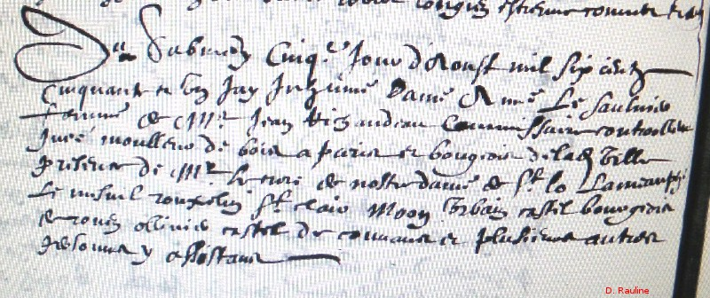 |
25 janvier 1652 : ondoiement d'un fils de Joachim de la Bonde, écuyer, conseiller du Roy vicomte de Thorigny et Marguerite de Richandeau.
|
Du vingt
cinq[uiem]e jour de janvier
mil six |
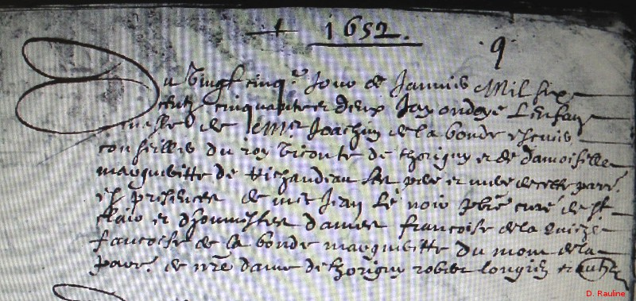 |
22 janvier 1653 : baptême d'un fils de Joachim de la Bonde et Marguerite Richaudeau, né le 4 janvier
|
Du mercredy
vingt deux Janvier mil six |
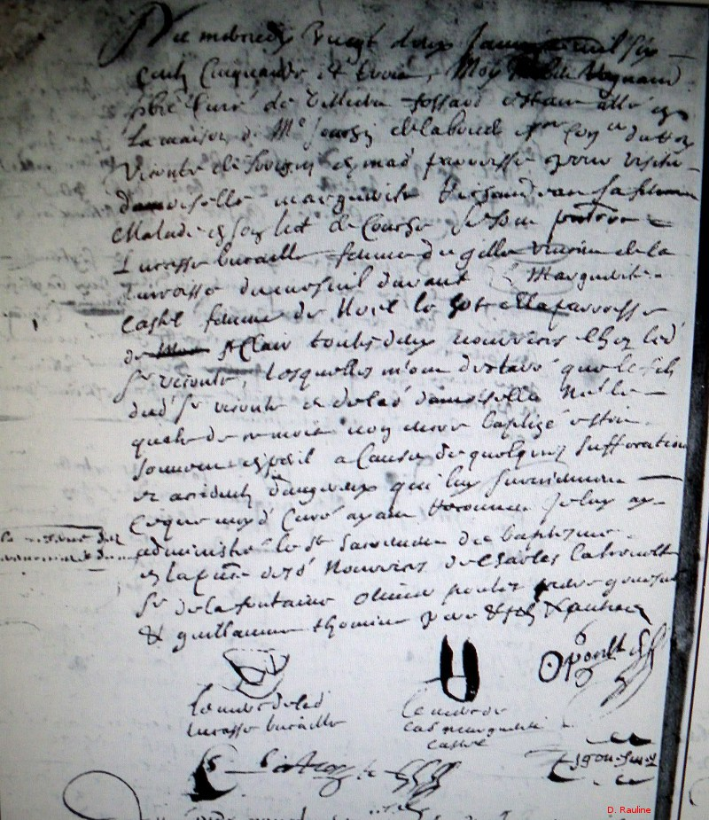 |
2 octobre 1655 : baptême de Charles François de la Bonde, né le 4 janvier 1653
|
Du second
octobre mil six cent cinquante |
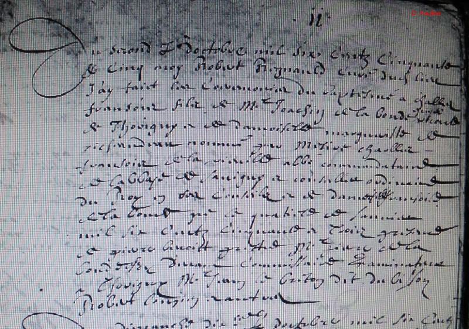 |
7 janvier 1658 : mariage de Charles Gourdier et Françoise de la Bonde
|
Ce lundy
septieme J[our] de Janvier |
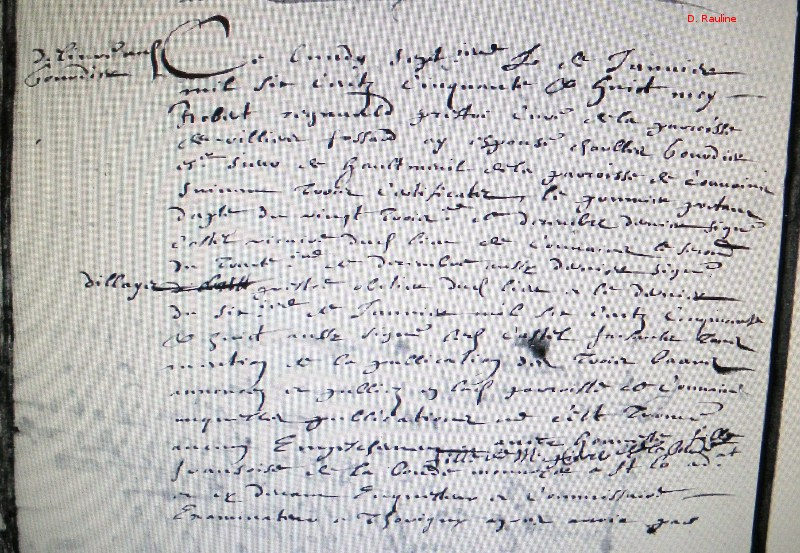 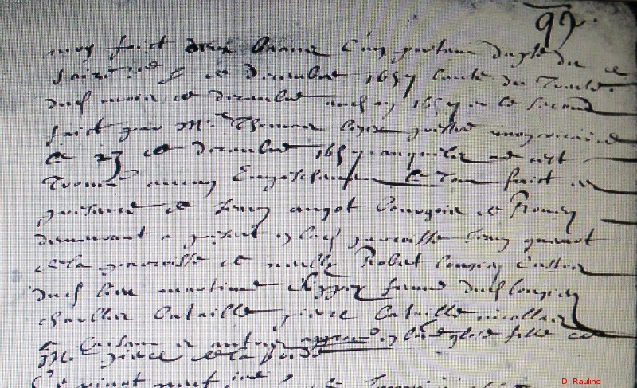 |
9 septembre 1660 : inhumation de Charlotte Bougeard
|
Le jeudy 9 de
sept[embre] 1660 a este
inhumée
|
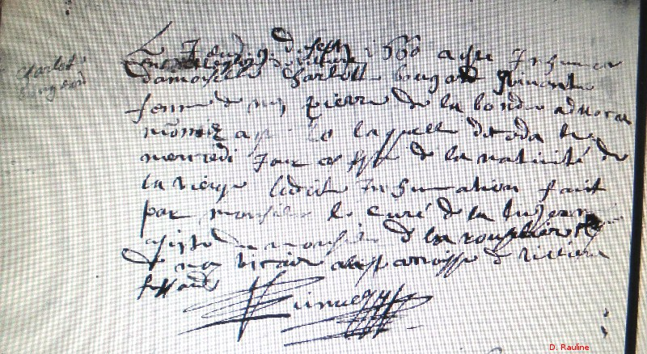 |
31 août 1661 : inhumation de Pierre de la Bonde
|
Le mercredi
dernier d'aoust 1661 a
esté inhumé
|
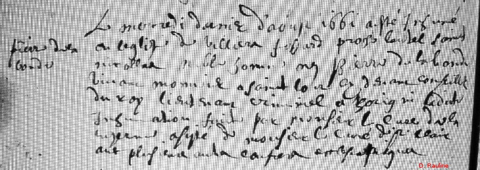 |
octobre 1661 : baptême de Jean Alexandre de la Bonde
|
Le mercredi 17
doctobre 1661 par moy
[Jean](?)
|
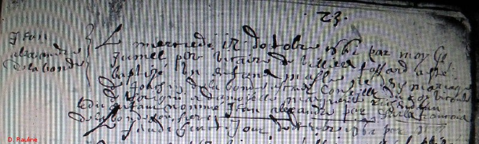 |
22
novembre 1667 : mariage de Jacques Damemme et de Catherine
Delabonde
Référence : Registres
paroissiaux
Provenance : Archives
Départementales de la
Manche, via Philippe Lemesnager
11 janvier 1683, baptême de Henry Preterre :
| Le
quatorze apvril mil six cent quatre vingt trois a este baptizé un fils né du mariage de francois preterre et charlotte Jourdan sa femme nommé henry par henry francois de la bonde escuier conseiller du Roy et viconte de thorigny assisté de damoiselle Anne daroy parin et marrinne p[rese]nce de Richard boscher & autres |
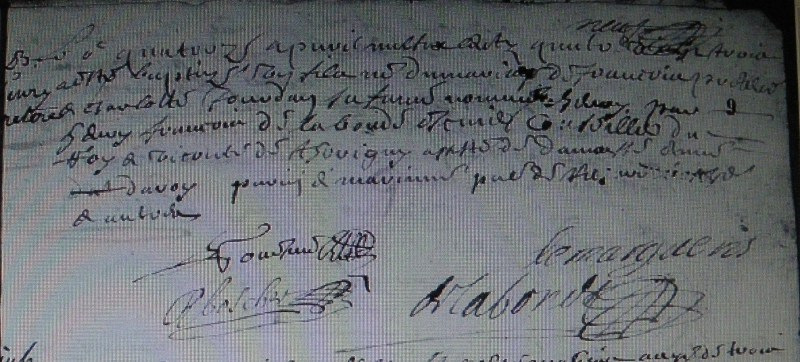 |
19 avril 1685, baptême de Henry François Preterre :
| Le
dix neuf apvril aud an a esté baptizé un fils ne du quinze du p[rese]nt mois & an du mariage de françois preterre & de charlotte lavalley nommé henry françois par henry françois de la bonde escuier Conseiller du Roy victe de thorigny assisté de samoiselle francoise de marguerie fille de Jean de marguerie escuier parin & marinne p[rese]nce de Richard boscher et autres |
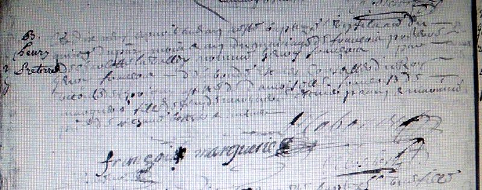 |
6 décembre 1691, baptême de Henry François Henry :
| Du
dimanche saiz[iem]e jour de decembre aud an a este baptise un fils nay du mariage de Jacques henry et Suzanne feron sa femme nomme henry francois par henry francois de la bonde escuier conseiller du Roy viconte de thorigny assiste de noble dame Jacqueline Marie de hennot femme de Guillaume de hotot escuier seigneur et patron de St Clair parin et marine presence de M[aîtr]e ollivier henry huissier et Richard boscher et plusieurs autres |
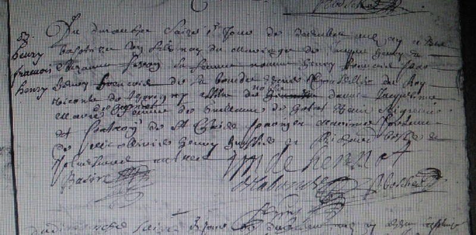 |
25 mai 1711, baptême de François Charles Raoult :
| Le
vingt cinquiesme jour de may mil sept cents onze a eté baptisé par moy sous signé pbre vicaire dud lieu un fils nay du jour dhyer du mariage legitime de gilles Raoult et françoise de Cloüet ses pere et me[re] lequel a été nommé francois Charles par noble homme francois charles de la bonde escuyer et noble dame Anne Antoinette de morand vicontesse de thorigny parrain et marraine |
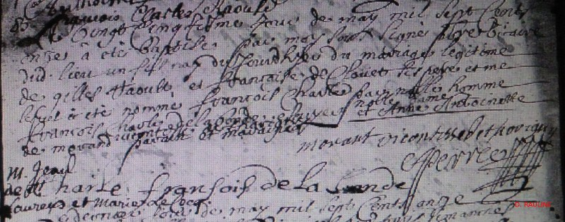 |
Référence : Registres
paroissiaux
Provenance : Archives
municipales de Rennes (www.archives.rennes.fr)
19 juillet 1757, paroisse Saint Etienne, inhumation de Charles Thomas de Morant :
Charles
thomas fils de
messire charles thomas
de mauran, chevalier, seigneur de penzes, Baron de
fontenay, chatelain de Brequigny, chevalier de
l'ordre royal et militaire de St loüis, colonel de dragons
de la Reine, et dame marie
anne quiberville decede d'hier
agé de 3 ans a été conduit dans cette
paroisse, et de la, par la
permission du cure de ce lieu transporté ? de st
germain pour y estre inhumé le 19 juillet 1757
31 juillet 1757, paroisse Saint Etienne, baptême de Thomas Marie Louis Geneviève de Morant :
Thomas
marie
loüis genevieve fils
légitime de h[au]t et puissant seigneur messire thomas
charles de mauran
chevalier seigneur de penzes, Baron de
fontenay, chatelain de Brequigny, chevalier de l'ordre Royal et
militaire
de St loüis, colonel de dragons de la Reinne, et dame
anne francoisse de
la Bonde d'hyberville né d'hier
a été baptisé par le curé
soussigné et tenu sur les
Sts fonds de baptesme par h[onnête](?) garçon Jean
hubert
de la paroisse de Catillon evesché de lizieux par
procuration pour nommer le dit enfant au nom de
messire loüis le Cordier de bigarres Comte de la heusse
la ditte procuration en datte du 26 may 1757 signé auvray(?)
par original de la heuse, de thomas le mouton, joseph
le mouton ? ? et par mathurinne
mellet vu aussi la procuration pour nommer le
dit enfant au nom de haute et puissante dame
marie catherine le Cordier de bigare, dame
de torp veuve de mr
d hyberville ayeulle maternelle
de l'enfant la dite procuration de ce jourduy 31 juillet
1757 [...]
et la ceremonie a eté faitte le trente et un
juillet 1757
2 septembre 1759, paroisse Saint Etienne, baptême de Marie Charlotte Joseph de Morant :
Dlle
marie charlotte
joseph fille legitime de
haut et puissant Seig[neu]r messire thomas charles de
morant marquis dudit Lieu comte de penzes Baron de
fontenoy chevalier chatelain de brequigny et autres Lieux
chevalier de l ordre royal et militaire de St Loüis mestre de
camp des dragons de la Reine presentement en son quartier
à Bordeaux en guienne et de haute et puissante dame
anne francoise de
la Bonde dyberville, dame patronne
de Rupiere et autres Lieux presentement à son chateau de
Brequigny, Ses pere et mere, née et baptisée ce
jour 2e 9bre
1759 par le curé soussigné et tenue sur les sts
fonts par le
sieur nicolas Blin et dlle perrine lamerin basset parain
et marainne qui signent
18 octobre 1763, paroisse Saint Etienne, inhumation de Thomas Charles de Morant :
haut
et puissant
Seigneur Messire Thomas
charles de moran chevalier comte de penzes
Baron de fontenay, Seigneur de Brequigny et autres lieux
chevalier de l'ordre militaire de st Loüis marechal
des Camps et armées du roy decedé en son chateau
de
brequigny le dix huit octobre 1763 la conduite de son
corps s'est faite dans cette eglise aujourdhuy vintieme du
même mois, pour y rendre les derniers devoirs en
la paroisse, et ensuite transporté dans l eglise paroissialle
de st germain de cette ville pour y etre inhumé dans
le caveau de ses ancetres la ceremonie des funerailles
faite en presence des témoins sousignés
3 août 1775, paroisse Saint Sauveur, mariage de Marie Charlotte Joseph de Morant :
Soussigné
Messire
Augustin René Loüis le Minsier Licensier
dans la faculté de
Theologie de sorbonne, archidiacre de l'Eglise d'Auche, vicaire
general
de Monseigneur
de Rennes, presents le curé de St Sauveur, et le
curé de Saint Germain, jay ce jour troisieme Aoust
mille sept cent soixante quinze reçu dans l'Eglise des
grandes ursulines les promesses respectives
de mariage entre haut et puissant seigneur Messire Armand
Meriadec le Gonidec, chef de nom d'armes, seigneur de Traissan,
Toueboiz(?) et autres lieux, officier
au regiment du Roi infanterie, fils ainé de feu haut et
puissant seigneur Messire Ollivier joseph le Gonidec
chef de nom et d'armes, chevalier seigneur de Traissan, conseiller au
parlement de Bretagne, et de haute
et puissante dame Magdeleine Marie Agathe Renée de la
Bigotiere de perchambault, Dame de Traissan
originaire de la treve de saint siacre, paroisse du plizidy diocese de
Tréguier, domicilié de fait de la paroisse
de Notre Dame de vitré evesché de Rennes, et de
droit de
celle de Saint Magloire évesché de Treguier,
mineur,
Madame sa mere presente, vu le decret de mariage passé et
arresté lonze juillet mil sept cent soixante
quinze par Messire Jean Allain Leon de Treverret(?) conseiller du Roi,
senechal de Rennes controllé
le mesme jour par Briand ; et haute et puissante Demoiselle Marie
Charlotte joseph de Morant, fille
puisnée de feu haut et puissant seigneur Messire Thomas
Charles de Morant, chevalier comte de
penzés, marechal des camps et armées du Roi, et
de feüe haute et puissante Dame Anne
francoise
de la Bonde dame
d'iberville, et de Rupierre ; originaire de la paroisse de
st Etienne, domiciliée de fait
de la paroisse de Saint vivien de Roüen, et de droit de celle
de Saint Sauveur de Rennes, mineure, Monsieur
Dubois des aurais son tuteur oneraire présent, vu le decret
de
mariage passé et arresté lonze juillet dernier
par Messire jean Allain Leon de Treverret, conseiller du Roi, senechal
de Rennes controllé le mesme jour par
Briand ; la ceremonie des fiances renvoiee au jour de la benediction
nuptiale par une dispense addressée
au Recteur de St Sauveur, à l'effet de fixer le domicile par
moi dit Abbé le Minsier en datte du vingt et deux
juillet de la presente année insinuée et
controllée aux insinuations ecclesiastiques le mesme jour par
Soulastre ; et ledit jour troisieme Aoust mil sept cent soixante et
quinze jay administré la Benediction
nuptiale aux susdites parties vu l'approbation et agreement de Messire
Loüis Marie florent comte du
chatelet de Marancourt(?) colonel lieutenant du regiment infanterie du
Roi scellés du sceau de ses armes, et
signés par luy au chateau de Cirey le vingt et un du dernier
mois, apres une proclamation de bans faits
canoniquement et sans opposition parvenüe à notre
connoissance dans la paroisse de saint sauveur
le trente du dit mois de jüillet dans la paroisse de Saint
vivien
de Roüen ainsy qu'il est constaté par la dispense
de Monseigneur de la roche foucaud archevesque dudit siege en datte du
dix du dernier mois ; dans la paroisse
de N. Dame de vitré vu le certificat de Monsieur Brunet
recteur en datte du vingt quatre, dans la paroisse
de Saint Magloire diocese du Treguier vu le certificat de Me Corne
curé en datte du dix sept, la dispense des
deux autres bans accordée à Rennes le vingt deux
juillet
dernier par moi soussigné, insinuée et
controllée
aux insinuations ecclesiastiques le mesme jour par Soulastre,
accordée à Roüen le dix et
signée par Me
L'abbé Bordier vicaire general, insinuée
controllée le mesme jour aux insinuations ecclesiastiques par
Le Tailleur accordée à Treguier le dix huit et
signée de Monsieur l'abbé de Boissien vicaire
general,
insinuée
controllée le mesme jour aux insinuations ecclesiastiques
par vivoaz(?) la ceremonie faite en presence de
Madame de Traissan mere du conjoint, de Me Dubois des aurais tuteur
oneraire de la conjointe, et autres
temoins soussignants en nombre competent ; quatre mots nuls rature
approuvé joseph interligne approuvé
Référence : Registres
paroissiaux
Provenance : Archives
départementales de l'Eure (archives.cg27.fr)
5 novembre 1772, mariage d'Esprit Robert Marie le Roux d'Esneval et Marie Françoise Félicité de Morant (6 pages de registre) :
Le
jeudy cinq novembre
mil sept cent soixante douze
apres la publication d'un ban pour premier et dernier du futur
mariage entre haut et puissant seigneur messire Esprit Robert
Marie le Roux, chevalier, Baron d'Esneval, Président
à mortier
du parlement de Rouen, fils de haut et puissant seigneur messire
Pierre Robert le Roux, chevalier, Baron d'Esneval et d'acquigny,
vidame de Normandie, Marquis de Gremouville, President
à mortier honoraire du parlement de Rouen, et de feu haute
et puissante dame francoise Catherine Clerel de Rampen
Baronne du Boisnormand ses pere et mere, de fait de la
de la paroisse de notre dame de Pavilly diocese de Rouen et
de droit de celle de St Amand de la ville de Rouen d'une part
et haute et puissante demoiselle Marie francoise
félicité de
Morant, fille mineure de feu haut et puissant seigneur Thomas
Charles de Morant Chevalier Comte de Penzès, Baron de
fontenay, seigneur chatellain de Brequigny, de Kouan(?)
Kangoumar(?) et Guernizac, Marechal des Camps et Armées du
Roy
chevalier de l'ordre royal et militaire de St Louis, et de feue
haute et puissante dame anne francoise de la Bonde d'Iberville
Dame patronne de Rupiere, de fait cy devant de la paroisse de
St Sulpice de Paris, et actuellement de celle de la Londe diocese de
Rouen et de droit de celle de St Sauveur de la ville de Rennes
la dite publication faite tant en la susdite paroisse de notre
dame de Pavilly diocese de Rouen le dimanche dix huit
octobre, et d'abondant en cette paroisse de St Cecile
d'Acquigny le meme dimanche vingt cinq octobre sans opposition
ainsy qu'il aparoit par le certificat du sieur curé de
Pavilly
en datte du vingt cinq octobre signé Anquetil
curé de Pavilly
legalisé par M. Marescot vic[aire] gen[éral] du
diocèse de Rouen et Liot
secretaire, et par celui du sieur curé de St amand de Rouen
en datte du vingt sept octobre signé des Champs
curé de
St amand, légalisé par M. Marescot vic[aire]
gen[éral] et Liot secretaire
et celui du sieur curé d'Acquigny en datte du vingt six
octobre signé Dumais curé d'Acquigny ; autre
publication
faite tant en la paroisse de la Londe diocese de Rouen le
dimanche vingt cinq octobre qu'en celle de St Sulpice de Paris
le meme dimanche vingt cinq octobre, et aussy en la paroisse
de St Sauveur de Rennes le même dimanche vingt cinq
octobre sans opposition ainsy qu'il paroit par le certificat
du sieur curé de la Londe et datte du vingt six octobre
signé le Cesne curé de la Londe
légalisé par M. Marescot
vic[aire] gen[éral] et son secretaire, et du sieur Moisin
curé de St
Sauveur de la ville de Rennes en datte du vingt six octobre
dernier legalisé par M. l'abbé du Bois vic[aire]
gen[éral] de
Rennes et contre signé Poisson secrétaire
Vu la dispense des deux autres bans accordée par Monseign.
l'archevêque de Rouen en datte du vingt deux octobre
signé Marescot vic[aire] gen[éral] et contre
signée Liot secretaire
munie du sceau archiepiscopal, duement insinuée et
controllée le vingt six octobre par laquelle Monseigneur
l'archevêque de Rouen permet au Sieur curé de la
Londe
de marier les parties sus denommées, pareille dispense
accordée par Monseigneur l'Evêque d'Evreux en datte
du vingt huit octobre par laquelle Monseigneur l'Evêque
d'Evreux accorde en outre à M. le Curé de Ste
Cecile d'Acquigny
la permission de marier les susdites parties, et immediatement
apres les fiançailles sans interstice de tems, le tout
signé
de Langle vic[aire] gen[éral] et contre signé
Laisné secretaire muny
du sceau episcopal et duement insinué et
controllé à
Evreux le vingt huit octobre, vu la dispense des deux
autres bans coordée par Monseigneur l'archevêque de
Paris en datte du vingt six octobre signé de Lescluse
vic[aire] gen[éral] et contre signé Godescard
secretaire munie
du sceau archiepiscopal duement insinuée et
controllée
le vingt sept dudit mois accordée sur le certificat du
sieur Durand vicaire de St Sulpice de Paris par laquelle
il demeure constant qu'il n'y a eu aucune oposition a la
publication des bans publiés à St Sulpice et par
laquelle
Monseigneur l'archevêque de Paris permet au sieur
curé
de la Londe de celebrer le susdit mariage. Pareille
dispense accordée par Monseigneur l'Evêque de
Rennes
en datte du vingt deux octobre dernier munie du sceau
episcopal et duement insinuée et controllée
à Rennes le
vingt deux octobre, vu aussy la permission donnée par M.
le curé de la Londe diocese de Rouen à M. le
Curé de Ste Cecile
d'Acquigny diocese d'Evreux ou a autre pretre approuvé dans
ledit diocese d'Evreux de fiancer et marier les parties sus
denommées dans la dite Eglise d'Acquigny en datte du
trente un octobre dernier signé Le Cesne curé de
la Londe
la dite signature legalisée par M. Marescot vic[aire]
gen[éral] du
diocese de Rouen et contre signée Aubry secrétaire
vu aussy le decret de mariage prononcé le dix neuf
octobre dernier par le lieutenant civil et criminel en la
Senechaussée et siege presidial de Rennes, dans lequel sont
referés les consentements de la dame ayeulle maternelle et de
parents delibérés à la tutelle de la
susdite demoiselle
Marie francoise felicité de Morant mineure en consequence
desquels consentements et sur les conclusions du Procureur
de Roy, ledit lieutenant civil et criminel permet à la
dite demoiselle de Morant mineure de contracter mariage
en face de notre mere la Sainte Eglise Catholique
Apostolique et Romaine avec le susdit seigneur Esprit
Robert Marie le Roux d'Esneval, l'expedition dudit
decret de mariage signé Joly pour le greffe dont la
signature est legalisée par le lieutenant civil et criminel
de la senechaussée et siege presidial de Rennes
signé
Varin et controllée à Rennes le vingt octobre
Nous Mathieu René de Langle prêtre bachelier en
theologie chanoine, grand archidiacre et vicaire general
du diocese d'Evreux, aumonier de Mesdames de france
en la presence de Monsieur Dumais curé de cette
paroisse d'Acquigny y demeurant et de Mons. Anquetil
curé de notre dame de Pavilly diocese de Rouen paroisse
du domicille de fait de Monsieur le President d'Esneval
et de Monsieur le President d'Acquigny son pere, ledit
sieur Anquetil demeurant audit lieu et bourg de Pavilly,
avons reçu apres avoir celebré les
fiançailles immediatement
avant le mariage ce jourdhuy en cette eglise et mutuel
consentement de mariage desdits seigneur Esprit Robert
Marie le Roux d'Esneval agé de vingt cinq ans et demy
et de demoiselle Marie francoise felicité de Morant
agée
de dix neuf ans et demy et leur avons donnée la benediction
nuptialle avec les ceremonies prescrittes par la Sainte
Eglise en presence et du consentement du susdit seigneur
Pierre Robert le Roux d'Esneval d'Acquigny, President à
mortier honoraire du parlement de Rouen pere de l'époux
demeurant ordinairement à rouen à son
hôtel rue de
la chaine paroisse de St Amand et depuis plus d'un
an à son château d'Esneval paroisse de Pavilly
diocese
de rouen ; et de haut et puissant seigneur Messire
Armand Michel de Pomereu, chevalier marquis
des Rieys(?) Presidant à mortier du parlement de
Rouen beau frere de l'Epoux ; et de haute et puissante
dame Anne Marie francoise le Roux d'Esneval son
epouse soeur de l'Epoux, demeurant tous deux
ordinairement à Rouen rue de l'hopital paroisse de Ste Croix
St Ouen et depuis plus d'un an à leur chateau du
heron ; de haute et puissante dame francoise Marthe
Angelique de Nollent, dame d'hebertot, veuve de haut
et puissant seigneur henry francois de Paule
Daguesseau conseiller d'Etat ordinaire demaurent
à Paris à son hôtel rue de
l'université paroisse de
St Sulpice cousine de l'Epoux ; et aussi en presence
et du consentement de haute et puissante dame Marie
Catherine Bigars de la Londe veuve de haut et puissant
seigneur Charles
François de la Bonde d'Iberville,
Président à la Cour des Comptes, Aydes et
Finances de
Normandie, ayeulle maternelle et tutrice honoraire de
l'épouse demeurante à son chateau du Torp ; de
haut
et puissant seigneur Thomas Louis Marie Genevieve
de Morant frère de l'Epouse, demeurant à Paris rue
de Montagne de Ste Genevieve paroisse de St Etienne
du Mont ; et de noble demoiselle Marie Charlotte
Josephe de Morant de Penzès soeur de l'Epouse et
de noble et discrette personne Charles Larcher pretre curé
d'Infreville parent de l'Epouse et autres soussignés qui mont
attesté ce que dessus sur le domicille, l'êge et
la qualité des
dites parties et ont signé avec l'Epoux et l'Epouse et avec
nous
Référence
: Inventaire sommaire des Archives Départementales
antérieures à 1790, Calvados, tome premier,
arrondissement de Caen, Armand Bénet, Caen, 1897
Provenance : Google books
Langrune, le 23 septembre 1700, mariage par Guillaume de Vigneral, dans la chapelle du prieuré de Tailleville, paroisse de Langrune, d'Henri-François de La Bonde, écuyer, vicomte de Thorigny, fils de Joachim et de Marguerite de Richandeau, et Anne-Antoinette Morant de Rupierre, fille de Charles-Thomas et de Valentine Chasot, en présence dud. Charles-Thomas Morant, Marc-Antoine Chasot et Jean Chasot.
Référence
: Registres paroissiaux
Provenance : Archives
Départementales de la
Manche
Le
14 9bre 1735 a ete inhumé dans la nef de
cette eglise le corps de Noble Dame anne
charlotte
de la bonde v[euv]e de
messire francois le Conte escuyer s[ieu]r
d'imouville, lad[ite] inhumation faite par M[onsieu]r de la Court
curé de quetreville et doyen de Cerences, le tout aux
p[rese]nces de m[aîtr]e loüis olivier p[rê]tre, m[onsieu]r le
Cordierre p[rê]tre
et plusieurs autres
Référence
: Registres paroissiaux
Provenance : Archives
Départementales de la
Manche
25 décembre 1700, inhumation de Marie Charlotte de la Bonde
Le
vingt cinqiesme jour de decembre mil sept cents
noble Dame marie charlotte de
La Bonde après avoir
reseu les sacrements a rendu son ame a dieu et a esté inhumée
dans le coeur de l eglise de Berigny par maistre George
avelinne pbre curé de Litteau presence de noble Discrette
personne Pierre Le coq Curé de Lad[ite] paroisse et de francois
Gombault pbre vicaire de Litteau, de Guil[laume] Gombault pbre
vicaire de Berigny et de plusieurs autres lesquels ont
assisté a lhinnumation
18 août 1722, mariage de Pierre Jean Le Roux et Marie Marguerite Le Coq de la Maugeraie
Le
mardy dix huitieme Jour d'aout apres la publication
d'un band faite et dispense obtenüe des deux autres
la premiere dispense de Monsieur L'officiel de Coustance
en dapte du quinze du dit mois ; la seconde # obtenüe de
#en datte du 17 du meme mois
son altesse Monsegneur de Loraine Evesque de
Bayeux, nous frere Olivier Jahoüel prestre chanoine
regulier de Saint augustin de l'ordre de premonstré
Coadjucateur de monsieur L'abbé de S[ain]t martin de mondée avons
donné la benediction nuptiale a Messire Pierre Jean
Le Roux, Seigneur et patron de La Haye Comtesse
Fontené sur le Vé Orval et austres Lieux fils et
heritier de feu Messire Robert Le Roux Seigneur de
Carville et de noble dame Rachel D'amours
ses pere et mere D'une part et Damoiselle
marie Marguerite Magdeleine Le Coq de la Maugeraye
Dame et patronne des parroisses de berigny et de Choüin
Dame du fief de la Luzerne Allain des boisdelles
fille et heritiere de feu noble home René Le Coq
Escuyer S[ieu]r de la Maugeraye et de noble dame
Charlotte de la bonde de Choisy
ses pere et mere
d'austre part, avons procédé a la celebration du
mariage apres les fiancailles faites et les austres
ceremonies deüment observées en presence de leurs
parens et amis cy denommez ; mestre francois Le compte
S[ieu]r Dimouville, Dame Anne
Charlotte de la Bonde epouse du s[ieu]r Dimouville, dame
Antoinette
Morant epouse de feu m[onsieu]r le vicomte de Thorigny, Marie
Marguerite Jeanne harasse de BoisLandelle cousine germaine
de lad epouse, Me Jacques Deschamps conseiller du Roy viconte de
Thorigny Anne
francoise de St gilles de la meaüffe, m[aîtr]e george femal p[re]tre
vic[aire]
dud[it] lieu, marie gaultier, Magdeleine Le Menager et Claude Rouxel
p[re]tre curé de Berigny en la presence et du consentement duquel le
mariage â eté fait et celebré
signatures de mmm lecoq de la maugerais, Le Roux, anne antoinette
morant, anne charlotte de la
bonde,
MJM harasse, francois le Conte, De St gilles La meauffe, Deschamps, Fr
Olivier jahouel, C Rouxel, Marie Gauttier, M Mesnager et femal
Référence
: Registres paroissiaux
Provenance : Archives
Départementales de la
Manche
Le
vingtiesme jour de janvier mil six
cents cinquante & huit jay baptisé
une fille née en legitime mariage
de Charles Gourdier escuier & dam[ois]elle
francoise La bonde
demeurante a la
Meauffe laquelle fille n'a pas receu
de nom dautant qu'elle estoit
proche de son trespas qui arriva le
mesme jour & fut inhumee dans l Eglise
de la Meauffe par M[aîtr]e Pierre Benoix
vicaire du lieu en la presence de M[aîtr]e
Pierre de la Rue sous diacre & Pierre
hamel de lad[ite] parr[oisse]
3 février 1659, baptême de Charles Gourdier
Le troisiesme de febvrier mil six
cents
cinquante neuf a esté baptisé un fils
nay en legitime mariage de Charles
Gourdier esc[uye]r & de dam[ois]elle
francoise de la
Bonde lequel a esté
nommé Charles par
Charles du Chastel esc[uye]r s[ieu]r & patron de Rampan & par
francoise Le prestre parrain & marraine
22 décembre 1661, baptême de Michel Gourdier
Le vingt deux[iem]e jour de
decembre
mil six cents soixante et an a été baptisé un fils
nay en legitime mariage de Charles
Gourdier es[cuye]r s[ieu]r de haumeny et de francoise
de la Bonde lequel a
esté nommé Michel
p[ar] Michel de la Dangie escuier et p[ar]
Cardine Le Metais parrain & marraine
Référence : Registres
paroissiaux
Provenance : Archives
Départementales de la
Manche
21 juin 1723, baptême de Charles Jean François le Roux
Le
vingt et un[iem]e jour de juin aud[it] an [1723] est né un
fils pour Messire Pierre Jean
Le Roux Ecuyer
Seigneur et patron de lad[ite]
parr[oisse] de la Haye Comtesse
Orval, Fontenay sur le Vé
Bérigny Choüin et
autres lieux, et noble dame
Marie Madeleine
Margueritte Le coq son epouse,
lequel enfant a
ete baptisé le lendemain par
nous curé dud[it] lieu
soussigné, et a été nommé
Charles Jean François
par Messire Jean françois Le
Conte Ecuyer
S[ieu]r d'Imouville de la
parr[oisse] d'Orval pour et
au nom de Messire Charles
françois De La
Bonde
Chevallier Seigneur d'Iberville, Chevallier
Commandeur de l'Ordre de Saint
Maurice en
Savoye, cy devant envoyé de Sa
Majesté aux
Cours d'Allemagne,
d'Angleterre, d'Espagne
et autre cours etrangeres
demeurant a paris,
et de Messire Jean l'Archer
Ecuyer S[ieu]r de La Londe,
led[it] S[ieu]r d'Imouville
assisté de noble Damoiselle
Anne françoise de St Gilles
dame et patronne
de La Meauffe tant en son nom
qu'au nom
de noble Damoiselle Anne
L'Archer de la parr[oisse]
de Longueville Evéché de
Bayeux, lesquels
parrain et marraine ont
signé led[it] jour et an
Signatures De Saint Gilles La
Meauffe, Le Conte et Le Maistre
1er septembre 1727, baptême de Charles Anne le Roux
Le premier jour d'avril, fete de
paques aud[it] an [1725] a été baptizé
a l'Eglize
par nous curé de la haye un fils né du méme jour
pour Messire pierre Jean le Roux Ecuyer Seig[neu]r et patron
de la haye comtesse et autres lieux, et noble dame Marie
Madeleine Margueritte Le coq son epouse, les
ceremonies du baptéme ayant eté differes par permission
de Monseigneur l'Evêque de Coutances en datte du
dix neuf[iem]e jour de mars dernier, a laquelle ceremonie
ont eté p[rése]ntes M[aîtr]e pierre Roquet p[rê]tre, led[it] seigneur
de
la Haye Comtesse, gilles Grezille et plusieurs autres
Signatures Le Roux de la Haye Comtesse, Le Maistre, Gresille, Rocquet
les ceremonies du bapteme cy devant ont ete supplees le premier
jour de septembre mil sept cent ving sept et led[it] enfant a eté
nommé Charles Anne par Messire Charles
françois de La Bonde
chevallier seigneur d'Iberville conseiller du roi en ses conseils et
president a la Chambre des Comptes et des finances de Normandie
accompagné de Noble Dame Renée Madeleine Françoise de Grimouville
epouse de Messire Nicolas Le conte Chevallier Seig[neu]r d'Ymouville
au nom de Demoiselle Anne l'Archer de la parr[oisse] de Longueville
lesquels parrain et marraine ont signé
Signatures de Grimouville, de
la Bonde d'Iberville, Le Maistre
1er septembre 1727, baptême de Pierre François le Roux
Le six[iem]e jour de may aud[it]
an [1726] a eté baptizé
par nous curé s[ou]signé un fils né du méme
jour pour Messire pierre Jean le Roux
Ecuyer Seig[neu]r et patron de lad[ite] parr[oisse] de la haye
comtesse et autres lieux, et noble dame Marie
Magdeleine Margueritte Le Coq son epouse, les ceremonies
du bapteme ayant eté differes par permission de Monseigneur
l'Evêque de Coutances, a laquelle administration ont eté p[rése]ntes
led[it] Seigneur de la Haye Comtesse qui a signé et M[aîtr]e pierre
Roquet p[rê]tre
de lad[ite] parr[oisse]
Signatures Le Roux de la Haye Comtesse, Le Maistre, Rocquet
les ceremonies du bapteme cy dessus ont ete supplees le premier jour
de [septem]bre
mil sept cent ving sept et led[it] enfant a eté nommé pierre françois
par Messire Charles françois
de La Bonde Chevallier seigneur
d'Iberville conseiller du roi en ses conseils et president a la
Chambre
des Comptes et des finances de Normandie accompagné
de Noble Dame Renée Madeleine Françoise de Grimouville
epouse de Messire Nicolas Le conte Chevallier Seig[neu]r d'Ymouville
lesquels parrain et marraine ont signé
Signatures de Grimouville, de
la Bonde d'Iberville, Le Maistre
Référence : Registres
paroissiaux
Provenance : Archives
départementales de Seine-Maritime
Ce jeudy vingt cinquieme jour dy mois de may mil sept cent cinquente deux
apres une publication des bancs de futur mariage faite en la paroisse de s[ain]t
etienne de la ville et dioceze de Rennes attestée par le certificat de Me Jean Le
marchand curé de lad[ite] paroisse dattée du sept may mil sept cent cinquante deux,
attestation de lad[ite] signature et dispense obtenüe de la publication des deux autres
bancs, signées le Moyne de la bonderie vicaire general de m L'Eveque de Rennes
en datte du huit may de la même année, insinuée au greffe des insinuations
ecclesiastiques du[it] diocese le même jour et an signée Soulatre ; pareilles publications
faites sans opposition en la parroisse de St Sulpice de paris les onze, quatorze et vingt et un
du présent mois et an ainsy qu'il demeure constant par le certificat de Me bachoud
vicaire dud[it] St Sulpice en datte du vingt trois may aud[it] temps düement reconnue à
l'archevêché de paris par l'aposition du sceau de M. l'arch[evêque] dud[it] lieu, et le seing de Me
de la bouche son secretaire, une publication des mêmes bancs faite en la paroisse de
torp, diocèze de Séez, signée du long pré prestre déservant lad[ite] cure, dattée du douze
may de la présente année, lad[ite] signature düement reconnüe et attestée veritable par
M L'Eveque de Séez le même jour et an, signé louis françois Eveque de Seez et dispense
de la publication des deux autres bans accordée par mond[it] Seigneur Evêque et signée
de luy le même jour et an düement insinuée au greffe des insinuations ecclesiastiques
dud[it] dioceze même jour et an signé Savard avec paraphe, laquelle attestation dud[it]
Du long pré deservant de torp donne pouvoir à Messire Charles Nicolas de Morant
pretre licentié de Sorbonne Chanoine theologal de l'eglise Cathedrale de bayeux de
celebrer le mariage esperé entre haut et puissant Seigneur Messire thomas charles de
Morant chevalier marquis de Morant, Comte de Penséz, Baron de
fontenay, Seigneur Châtelain de Brequiny, Koüan, Kangomast, Guebrisac, orbevile(?)
et autres lieux, mestre de Camp des dragons de la Reyne, fils mineur de feu
haut et puissant Seigneur Charles thomas Marie de Morant Ch[evali]er marq[uis] de Morant et
de haute et puissante dame, dame Gabrielle felicité de la Rivière son epouse
et haute et puissante demoiselle demoiselle anne françoise de la bonde d Iberville
dame et patronne de Rupierre, fille mineure de feu haut et puissant Seigneur
messire Charles françois de la bonde d'Iberville Ch[evali]er seigneur et patron de Rupierre
conseiller du roy en ses conseils, président en sa Chambre des Comptes aydes et finances
de Normandie, et de haute et puissante dame dame Marie Catherine Le Cordier de
Bigards dame et patronne honoraire de torp ; vu aussy l'acte exercé le cinq
may mil sept cent cinquante deux, par devant Monsieur maistre Charles y[ves]
René Logeois Conseiller du Roy alloüé lieutenant general civil et criminel ?
cour, siège présidial et senechaussée de Rennes, et autres, par lequel sur la de[cla]
ration des parents dud[it] Seigneur de Morant, oüi les conclusions du procureur du
Roy, il demeure suffisamment authoriser de contracter mariage avec ma ditte de
moiselle, Led[it] acte signé Logeois, monsieur Lalloué lieutenant general, bonnesecuelles
procureur du Roy, et prudhomme commis du greffe, et plus bas signé Guillard
controllé aud[it] lieu le six may de lad[ite] année, nous susd[it] Charles nicolas de
Morant prestre Licentié de Sorbonne avons accompli la ceremonie des fiancailles
et donné de suite la benediction nuptiale avec les ceremonies prescrites par la sainte
Eglise aud[it] Seigneur thomas Charles de Morant, et à Mad[ite] d[emois]elle Anne françoise
de la Bonde d'Iberville dans la chapelle du Château de la Londe suivant la
permission de M L'archevêque de Roüen dattée du vingt deux may mil sept
cent cinquante deux, signée Sehier vicaire general, et plus bas Mocquet, et munie
du sceau de ses armes, tous lesquels actes à l'exception de l'acte d'authorisation cy
dessus passé à Rennes sont demeurés aux mains de venerable et discrette personne
maistre Louis René Langlois Chevalier prestre curé de la Londe soussigné
duquel nous avons été assisté en la celebration du présent mariage, lequel a
eté fait et celebré en présence et du consentement de haute et puissante dame
dame Marie Catherine Le Cordier de Bigards dame et patronne honnoraire de
torp mere de lad[ite] d[emoiselle] anne francoise de la Bonde d'Iberville, et en présence
de hauts et puissants Seigneurs messire louis francois le Cordier de Bigards
Chevalier Seigneur et marquis de Laulne, brigadier des armées du Roy, chevalier
de l'ordre royal et militaire de saint loüis grand oncle maternel de lad[ite] d[emois]elle
Messire Jean Baptiste françois le Cordier de Bigards Chevalier marquis
de la londe président à mortier honnoraire du parlement de Normandie
Messire Louis le Cordier de Bigards Chevalier Seigneur comte de la heuze
tous deux oncles maternels de lad[ite] demoiselle, Messire Jacques Charles de la
Riviere chevalier Seigneur Comte de Meur, gouverneur de Saint Brieux, oncle
maternel dud[it] Seigneur de Morant et autres soussignez. approuvés deux mots
raturés dans le présent.
Signatures de Th. Ch. de Morant, A. F La Bonde d'Iberville, Louis Le Cordier de Bigars, J.B.F. Le Cordier de Bigars, Louis Le Cordier de Bigars, La Rivière de Mur, M. C. Le Cordier de Bigars d'Iberville, de R? de Gouy, Beaunay, Angélique Le Cordier de Bigars, Labbé de Savary, Beaunay de Boishimont, Vigneral de Sepvray, Savary, du Sart, Chevalier de la Londe, l'Abbé de Morant
Référence : Registres
paroissiaux
Provenance : Archives
Départementales de la
Manche
21 novembre 1675, baptême de Joachim Saffray
charles jouachim Saffray fils en legiti[me]
mariage de Jean Saffray boulenger et de
peronne fleury sa femme ne le mardy dix
de novembre mil six centz soissante et quinze
a esté baptizé par led[it] pasturel pbre vicai[re]
dud[it] lieu le jeudy vingt et un dud[it] mois et
an et nommé par m[aîtr]e jouachin fossey
docteur en medecine parrain assisté de d[emoise]lle
Anne charlotte de la bonde fille de m[aîtr]e jouachim
de la bonde viconte a thorigny et ont signé
avec led[it] pasturel les parrain et marraine
Signature de Pasturel, Anne Charlotte de la Bonde, Fossey
15 octobre 1676, baptême de Hélie Sinel
helie sinel fils de guillaume sinel [et]
de jacquellinne auber ne le mardy troi[sieme]
d octobre aud[it] an 1676 a este baptizé p[ar]
led[it] pasturel pbre vicaire dud[it] lieu l[e]
jeudy quinze de octobre aud[it] an et a e[sté]
nomme par helie daion fils de m[aîtr]e
Guillaume daion s[ieu]r de la carpenterie pr[ocureur]
fiscal a thorigny assisté de marie catherine
francoise de la bonde fille de m[aîtr]e jouachi[m]
de la bonde vicomte a thorigny et ont dit
ne scavoir signer
Signature de Pasturel